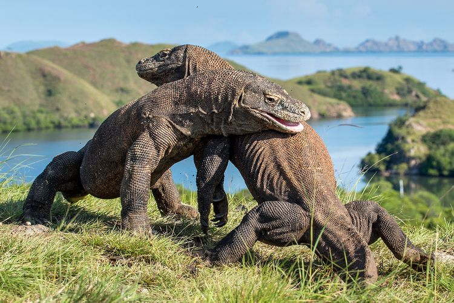

Seperti yang sudah di jelasan sebelumnya, bahwa atribut allign sudah tidak digunakan lagi HTML5. Adapun pada contoh yang usang ini adalah pengaturan align secara vertical, baik top, middle, maupun bottom.
Komodo adalah salah satu hewan endemik klas Indonesia yang termasuk ke dalam spesial biawak besar di Nusa Tenggara Timur dan pulau-pulau di sdekitarnya.
komodo adalah salah satu hewan endemik khas Indonesia yang termasuk ke dalam spesies biawak bedar dio Nusa Tenggara Timur dan sekitarnya.
komodo adalah salah satu hewan endemik khas Indonesia yang termasuk ke dalam spesies biawak bedar dio Nusa Tenggara Timur dan sekitarnya.